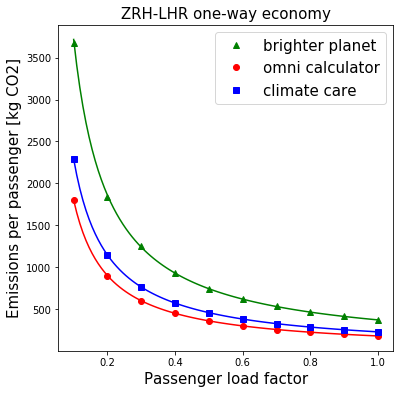
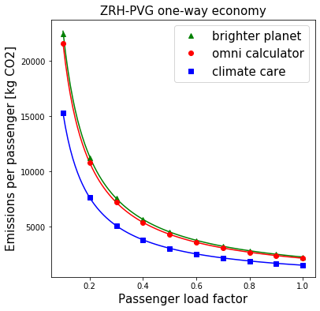

Some of the CO2 emissions calculators allow the user to input the passenger load factor (PLF) - the fraction of seats on the plane that are full. Varying this factor for a couple of routes, we see that the results follow a simple relationship: emissions per passenger for a particular PLF = emissions per passenger for PLF=1 / PLF. The total amount of emissions stays the same, but fewer passengers are responsible for it.
Going along with this reasoning (I have some doubts, but I’ll address them another time) this makes passenger load factor quite a relevant input for a CO2 emission calculation. If the plane were only half full, then using this reasoning each passenger would be responsible for twice the amount of CO2.
How much does passenger load factor vary in reality? Ryanair achieved an average passenger load factor of 96% over the last year, Emirates 77%. BEIS reports that ATR72 200/500/600 aircraft on domestic routes average 64%, while Boeing 787-800 Dreamliner aircraft on short haul routes average 93%. There’s clearly quite a spread to these figures, so the overall average of around 80% won’t tell the full story.
 Calculators accessed 2019-11.